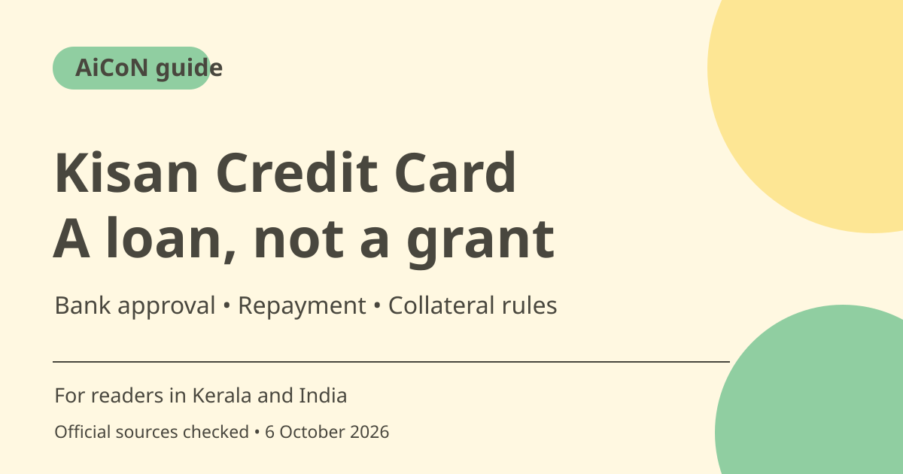

Kisan Credit Card: farm loan eligibility and collateral limits
Scoped recheck: 24 October 2026. Official source and policy review; no account, installation, application or payment test.
Kisan Credit Card provides bank credit for eligible farming and allied activities. It must be repaid. RBI raised the collateral-free agricultural loan limit to ₹2 lakh per borrower, but that is not automatic approval or permission to ignore the bank's credit, primary-security and repayment conditions.

What is KCC?
KCC is a bank-credit facility for agriculture and allied work. The official PM-Kisan site links a KCC application form, but PM-Kisan income support and a KCC loan are different. Completing an income-support registration does not automatically create a loan, and a downloaded application is not sanction of the amount you request.
Eligibility and bank-specific rules
RBI’s June 2026 small-finance-bank KCC directions list owner-cultivators, tenant farmers, oral lessees, sharecroppers and eligible SHG/JLG borrowers, with separate allied-activity categories. However, these directions apply to loans sanctioned from 1 January 2027. Earlier loans remain under extant rules until maturity or next renewal. They are not current universal rules for every lender. Ask your own bank for the rules and evidence applicable to your sanction date.
₹2 lakh collateral-free limit
The separate December 2024 RBI circular already requires banks to waive collateral security and margin requirements for agricultural/allied loans up to ₹2 lakh per borrower, effective no later than 1 January 2025. It covers scheduled commercial banks including RRBs and small finance banks, state co-operative banks and district central co-operative banks. This is a per-borrower limit, not an automatic ₹2 lakh sanction or free grant.
The future-dated 2026 small-finance-bank directions explicitly separate secondary collateral from primary security or assets financed. They also describe optional gold/silver pledge only with an explicit borrower declaration. Do not treat these January 2027 provisions as already applicable to every current loan. Get your bank’s current security requirements in writing.
Prepare evidence for your circumstances
Gather identity and relevant farming, land/tenancy, crop and existing-credit details requested by the bank. Tenant and sharecropper situations can need different proof from ownership. Do not invent land records or assume every borrower can use the same checklist. For a Kerala applicant, your bank or recognised local service route can explain documents accepted for your actual cultivation.
Interest and subsidy need current confirmation
The documents do not establish one universal rate for all KCC borrowing. Get your current sanction amount, rate, processing/inspection charges, sub-limits, repayment dates and applicable interest-subvention/prompt-repayment conditions in writing. The ₹2 lakh collateral-free threshold is not an interest-subsidy ceiling or a promise of any advertised low effective rate. Missed repayments can affect costs or benefits.
Protect your application
Use the official form or your bank's maintained application route and retain a receipt. Do not pay an unverified agent to guarantee approval or share banking OTPs, PINs or passwords. Ask the bank to explain fees, security and how repayments work before accepting a loan. Keep original documents safe and provide only what the verified process requires.
How to use it, step by step
- Ask your bank whether your cultivation or allied activity qualifies under its current KCC rules.
- Open the official PM-Kisan site for the linked KCC form, or obtain the current application directly from the bank.
- Prepare the identity, land/tenancy, crop/activity and existing-credit details the bank requests for your circumstances.
- Complete and review the application without inventing ownership or income details, then submit through the verified bank/service route.
- Keep the acknowledgement and respond to legitimate document requests through trusted channels.
- Before accepting, read the sanctioned amount, rate, fees, repayment dates, security and subsidy conditions.
- Repay under the agreed schedule and check renewal/review requirements with the bank. Do not treat the facility as free money.
Cost, eligibility and limits
| Loan nature | Repayable bank credit, not a grant or automatic PM-Kisan benefit. |
|---|---|
| Collateral limit | RBI circular raises agricultural/allied collateral-free limit to ₹2 lakh per borrower. Approval and primary-security distinctions still apply. |
| Bank scope | December 2024 waiver covers the listed commercial/co-operative banks. Detailed June 2026 small-finance-bank rules apply to sanctions from 1 January 2027; earlier loans retain existing rules until maturity/renewal. |
| Rates and fees | Get current bank sanction terms and subsidy/repayment conditions. No universal interest promise. |
January 2027 changes are not today’s checklist
The 2026 small-finance-bank directions describe six-year composite facilities, crop-season repayment, local-administration/panchayat certificates for sharecroppers/oral lessees and an affidavit route up to ₹50,000 where certification is difficult. Those provisions belong to the January 2027 framework, not a verified present-day shortcut. Ask your lender about the rules in force for your actual application. Do not submit false records or assume insurance/digital access can be added without consent.
Frequently asked questions
Is KCC a government cash grant?
No. It is a loan facility with repayment obligations.
Does ₹2 lakh collateral-free mean automatic approval?
No. The bank still assesses eligibility, documents and credit terms.
Is there one rate for all borrowers?
Do not assume so. Confirm your bank's current sanction and subsidy conditions.
Official sources
- Official PM-Kisan and KCC form route
- RBI collateral-free agriculture circular
- RBI 2026 small-finance-bank KCC directions
Checked 6 October 2026. Features and prices can change. This is a guide, not a personal product test.
Scoped recheck: December 2024 collateral and margin waiver, bank coverage · June 2026 small-finance-bank directions, paragraph 2 commencement and transition · official KCC form route. Checked 24 October 2026. Not a loan approval or current bank quote.